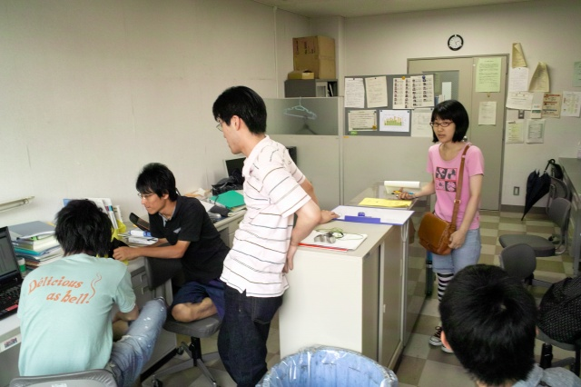

今日はドキドキ合格発表。無事に全員合格です！17時に合格リストが3号館で掲示、HPに電子掲示されます。便利なのか不便なのか？趣が足りない気もしますが。今日はみんなで3号館に見に行って、村田先生や先輩に報告。そして、HPで改めて見ているようです。それはそれで面白い。
群がってます
自分の番号は？

BCCで40人くらいの宛先登録中
あーおわった
K岡先輩も様子を見に来てくれました
やっと研究に集中できます！
| ・ 合格! (H23.08.30) | |||
今日はドキドキ合格発表。無事に全員合格です！17時に合格リストが3号館で掲示、HPに電子掲示されます。便利なのか不便なのか？趣が足りない気もしますが。今日はみんなで3号館に見に行って、村田先生や先輩に報告。そして、HPで改めて見ているようです。それはそれで面白い。 |
|||
|
群がってます |
自分の番号は？ | ||
|
BCCで40人くらいの宛先登録中 |
あーおわった | ||
|

K岡先輩も様子を見に来てくれました |
やっと研究に集中できます！ | ||